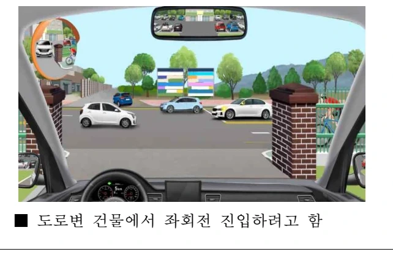

825. Trong các tình huống sau, hai tình huống có khả năng xảy ra tai nạn cao nhất là gì?

- ①Xe đạp đang di chuyển ở phía bên phải vỉa hè
- ②Xe ô tô đang chờ rẽ trái để vào tòa nhà
- ③Xe ô tô đang chạy từ bên trái sang bên phải của đường
- ④Xe ô tô đỗ ở bãi đất trống đối diện
- ⑤Xe ô tô được nhìn thấy qua gương chiếu hậu
Xem đáp án
Đáp án
① Xe đạp đang di chuyển ở phía bên phải vỉa hè
② Xe ô tô đang chờ rẽ trái để vào tòa nhà
Căn cứ
Người đi bộ và xe đạp có thể đi vào bất ngờ gần lối vào nên người lái xe nên lái xe chậm và cẩn thận. Ngoài ra, ô tô chờ rẽ trái để vào tòa nhà có nguy cơ cao va chạm với các phương tiện ra vào, người đi bộ, xe đạp làm tăng khả năng xảy ra tai nạn. Mặt khác, các phương tiện di chuyển bình thường dọc làn đường (③), phương tiện dừng (④) và phương tiện phản chiếu trong gương phản chiếu (⑤) có nguy cơ tai nạn tương đối thấp. Vì vậy, những trường hợp có khả năng xảy ra tai nạn cao nhất là ① và ②. Trước khi đi vào đường từ bãi đậu xe, v.v., hãy nhớ quan sát bên trái và bên phải để kiểm tra tiến trình của người đi bộ và các phương tiện khác.
Phần căn cứ là bản dịch máy để tham khảo.